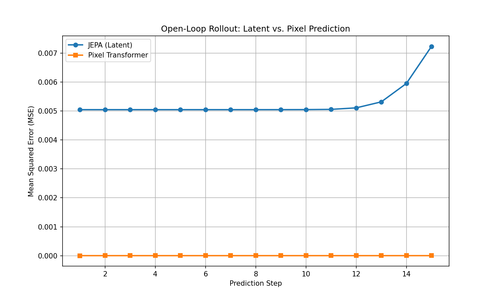

What a Model Must Discard to Represent Physics
I trained two small models to predict the next frame of a two-body elastic collision: one that predicts pixels directly, and one that predicts in a compressed latent space using a JEPA-style architecture. The pixel model achieved a loss three orders of magnitude lower. It had also, on closer inspection, learned almost nothing about the underlying physics.
Experimental Setup
The environment needed to be small enough to fully simulate and inspect, while retaining genuine dynamics: momentum transfer, elastic collisions, and wall bounces, so that "understanding the physics" would mean something concrete rather than curve-fitting to a specific trajectory. PyMunk provides two balls, no gravity, and perfectly elastic collisions in a bounded 64×64 box, rendered to raw RGB frames. The dataset consists of 10,000 frames, one simulation step apart.
The question of interest was not whether a neural network could predict a bouncing ball, but what representation it would need to construct in order to do so accurately over many steps rather than just one.
Two Approaches to Frame Prediction
Both models take frame t and predict frame t+1. They differ
entirely in where the prediction takes place.
Pixel Transformer: prediction in pixel space
This model splits each 64×64 frame into 64 patches of 8×8 pixels, embeds them, runs six Transformer-encoder layers with learned positional embeddings, and projects directly back to pixel patches. There is no bottleneck between input and output beyond the embedding dimension: every patch continues to attend to every other patch, at full spatial resolution, throughout the network.
class PixelTransformer(nn.Module):
# patchify -> +pos_embed -> 6x TransformerEncoderLayer -> unpatchify
# embed_dim=192, heads=8, layers=6, 2,718,528 paramsJEPA: prediction in latent space
This model encodes each frame through four convolutional layers into a single 64-dimensional vector, a bottleneck 96 times narrower than the 12,288 raw pixel values it starts from. A small MLP predictor advances that vector forward in time. A decoder is used only afterward, to compare the prediction against pixels for the loss.
class SimpleJEPA(nn.Module):
# encoder: 64x64x3 --[4 conv layers]--> z (64-dim)
# predictor: z_t --[MLP]--> z_t+1
# decoder: z --[4 deconv layers]--> 64x64x3 (for loss + inspection only)
# 1,925,059 paramsThe Transformer never has to compress anything; it can pass spatial detail straight through. The JEPA is required, at every step, to route the entire scene through a 64-number bottleneck. That constraint turns out to matter more than either architecture's raw capacity.
Training Loss as a Misleading Verdict
Both models trained for 20 epochs on the same data split with the same optimizer. By training loss alone, the Transformer outperformed the JEPA by a wide margin.
| Model | Train loss | Val loss | Parameters |
|---|---|---|---|
| JEPA (latent) | 0.010113 | 0.010091 | 1,925,059 |
| Pixel Transformer | 0.000030 | 0.000003 | 2,718,528 |
A one-step MSE this low, on a deterministic simulation with a fixed frame ordering, is a warning sign rather than a genuine result. It is consistent with a model that has effectively indexed the trajectory rather than learned the rule that generates it. The rollout below tests this directly.
Open-Loop Rollout
Training loss only requires a model to predict one step ahead from real context. To assess what each model had actually learned, I fed each model's own prediction back in as the next input for 15 steps, with no ground truth in the loop: an open-loop rollout.

A flat, near-zero error across 15 steps of self-fed rollout is not evidence of stability on this task; it is evidence against genuine dynamics modeling. The Transformer is not tracking momentum and elastic collisions step by step. It is reproducing a trajectory it has already memorized, patch by patch, regardless of what should physically happen next. The JEPA's error is higher and drifts upward, but it is a more honest number: it reflects a model integrating a dynamics rule forward and accumulating the small errors that come with that process, in the way any approximate physical model does.
Testing Intervention on the Latent State
The clearest way to distinguish a memorized trajectory from a manipulable state is to alter the state mid-rollout and observe whether the model can continue coherently from the new situation. The procedure: five steps of ordinary rollout, an intervention on the latent vector consisting of a forced jump in position, then five further steps without assistance.
z_next += 0.5 applied across all 64 dimensions, a direct edit to the model's internal state. It decodes to a displaced ball, and coherent motion resumes.| Model | Intervention possible? | Result |
|---|---|---|
| JEPA | yes | Latent dimension edited directly; physics continued correctly from the new position. |
| Pixel Transformer | no | No latent state to manipulate; only a memorized pixel trajectory. |
Editing a latent vector and observing a coherent continuation is a controlled
observation on one small, deterministic, two-body system, not evidence of general
causal reasoning. I also did not identify a clean, isolated position dimension in the
way find_x_dim.py was written to attempt; the intervention here is a
uniform perturbation across all 64 dimensions, which the model nonetheless resolves
into a sensible new state. This is a notable result, but a narrower and more specific
claim than saying the model has disentangled physical variables.
Discussion
The headline loss figure was the least informative statistic in the experiment. The Transformer's error of 0.000003 did not reflect a better model of the physics; it reflected a model with no incentive to build one, since nothing in its architecture required it to discard any information. The JEPA's higher loss was the cost of a bottleneck doing its job: 64 numbers cannot encode the arbitrary detail of 12,288 pixels, so the only frames the model can predict well are ones that follow a consistent rule.
This is the part of the result that reads as physics rather than machine learning. A bottleneck is a modeling choice with consequences, in the same way that choosing which quantities to track (position and momentum, for instance, rather than the exact pixel-level rendering of a ball) is a modeling choice with consequences. Discarding information deliberately, in the right place, is what left this model with a representation coherent enough to intervene on at all.
Code
Environment generation (env.py), both training scripts
(train_jepa.py, train_transformer.py), the rollout and
intervention experiments (rollout.py, intervention.py), and the
dimension-sweep tools used to attempt to localize position within the latent space
(find_x_dim.py, visualize_dimensions.py) are available on
GitHub.